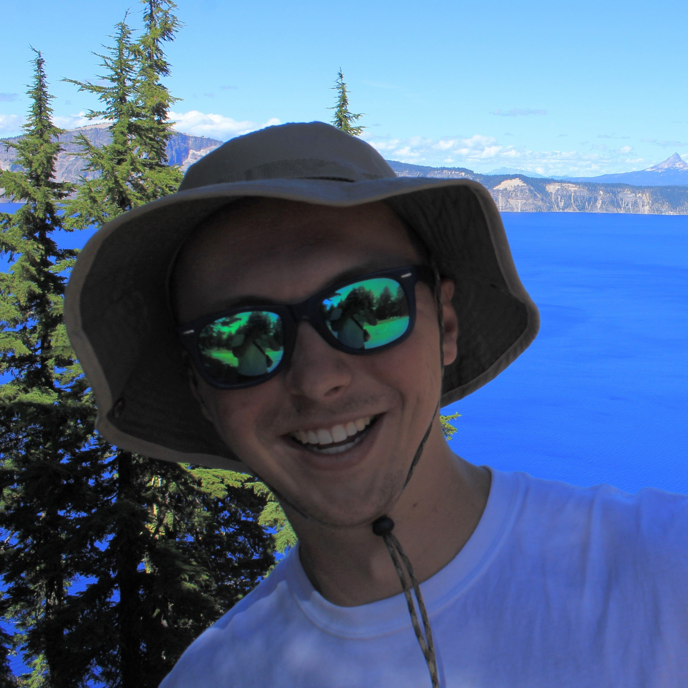

MEET THE TEAM
MEET THE TEAM

BILLY HENSHAW
My name is Billy Henshaw.
I am a second-year MSGIS student in the IDCE Department at Clark University. My professional interests are in smart agriculture, sustainable development, and climate change and impacts, all within the context of a GIS. When not nerding out about raster data, you can find me playing Ultimate Frisbee, chess, D&D, or hiking! Catch me in the PNW.
 ZEXING ZHENG
ZEXING ZHENG
My name is Zexing Zheng.
I am a student in the IDCE Department at Clark University. I am interested in remote sensing, geospatial analysis with R, and quantitative methods.
 AANDISHAH TEHZEEB SAMARA
AANDISHAH TEHZEEB SAMARA
My name is Aandishah! I am a candidate for MS GIS in the Graduate School of Geography at Clark University. My interests in research include climate change, sea-ice-atmosphere interactions, and applications of remote sensing. In particular, I am fascinated by the impacts of climate change on the interactions between the cryosphere and the atmosphere, and how they impact feedback systems. At Clark, I have used remote sensing data to analyze the negative correlation between sea ice and cloud cover in the Pacific Arctic using time series analysis.